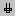
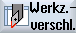

In der Werkzeugverschleißliste befinden sich alle Parameter und Funktionen, die während des laufenden Betriebes benötigt werden.
Werkzeuge die sich längere Zeit im Einsatz befinden, können sich abnutzen. Diesen Verschleiß können Sie messen und in die Werkzeugverschleißliste eintragen. Die Steuerung berücksichtigt diese Daten dann bei der Berechnung der Werkzeuglängen- bzw. Radiuskorrektur. Auf diese Weise erreichen Sie eine gleich bleibende Präzision bei der Werkstückbearbeitung.
Überwachungsarten
Sie können die Einsatzdauer der Werkzeuge über Stückzahl, Standzeit oder Verschleiß automatisch überwachen lassen.
|
Hinweis
|
Kombination von Überwachungsarten
Sie haben die Möglichkeit, ein Werkzeug durch eine Art überwachen zu lassen oder eine beliebige Kombination der Überwachungsarten einzuschalten.
|
Außerdem können Sie Werkzeuge sperren, wenn Sie diese nicht mehr einsetzen möchten.
Werkzeugparameter
Spaltenüberschrift | Bedeutung |
|---|
Platz
BS
  *falls in Magazinanwahl aktiviert | Magazin/Platznummer die Magazinplatznummern
Es wird zuerst die Magazinnummer und dann die Platznummer im Magazin angegeben.
Ist nur ein Magazin vorhanden, wird nur die Platznummer angezeigt. Beladestelle im Belademagazin
Bei anderen Magazintypen (z.B. bei einer Kette) können zusätzlich folgende Symbole angezeigt werden: |
Typ | Werkzeugtyp In Abhängigkeit vom Werkzeugtyp (dargestellt als Symbol) werden bestimmte Werkzeugkorrekturdaten freigegeben. Das Symbol kennzeichnet die Lage des Werkzeugs, die beim Anlegen des Werkzeugs gewählt wurde. |
 | Mit Hilfe der Taste <Select> haben Sie die Möglichkeit, die Werkzeuglage oder den Werkzeugtyp zu ändern. |
Werkzeugname | Die Identifikation des Werkzeugs erfolgt über den Namen und die Schwesterwerkzeugnummer. Den Namen können Sie als Text oder Nummer eingeben. Hinweis: Die maximale Namenslänge von Werkzeugnamen beträgt 31 ASCII Zeichen. Bei asiatischen Zeichen oder Unicode Zeichen verringert sich die Zeichenanzahl. Folgende Sonderzeichen sind nicht zulässig: | # ". |
ST | Schwesterwerkzeugnummer (für Ersatzwerkzeugstrategie). |
D | Schneidennummer |
Δ Länge X, Δ Länge Z | Verschleiß zur Länge X bzw. Verschleiß zur Länge Z |
Δ Radius | Verschleiß des Radius |
T C | Anwahl der Werkzeugüberwachung
- durch Standzeit (T) - durch Stückzahl (C) - durch Verschleiß (W) Die Verschleißüberwachung wird über ein Maschinendatum konfiguriert. Beachten Sie hierzu die Angaben des Maschinenherstellers. |
Standzeit, bzw. Stückzahl, bzw. Verschleiß * *Parameter abhängig von der Anwahl in TC | Standzeit des Werkzeugs. Stückzahl der Werkstücke. Verschleiß des Werkzeugs |
Sollwert | Sollwert für Standzeit, Stückzahl bzw. Verschleiß |
Vorw.-grenze | Angabe der Standzeit, der Stückzahl bzw. des Verschleißes, bei der eine Warnung ausgegeben wird. |
G | Das Werkzeug ist gesperrt, wenn das Kontrollkästchen aktiviert ist. |
Weitere Parameter
Wenn Sie eindeutige Schneidennummern eingerichtet haben, werden diese in der ersten Spalte angezeigt.
Spaltenüberschrift | Bedeutung |
|---|
D-Nr. | Eindeutige Schneidennummer |
SN | Schneidennummer |
SC  | Einrichtekorrekturen Anzeige der vorhandenen Einrichtekorrekturen |
Symbole in der Werkzeugverschleißliste
Symbol / Kennzeichnung | | Bedeutung |
|---|
Werkzeugtyp |
Rotes Kreuz |  | Das Werkzeug ist gesperrt. |
Gelbes Dreieck - Spitze nach unten | | Die Vorwarngrenze ist erreicht. |
Gelbes Dreieck - Spitze nach oben |  | Das Werkzeug befindet sich in einem besonderen Zustand. Stellen Sie den Cursor auf das gekennzeichnete Werkzeug. Ein Tooltip gibt eine kurze Beschreibung. |
Grüner Rahmen
| | Das Werkzeug ist vorausgewählt. |
Magazin/Platznummer |
Grüner Doppelpfeil |  | Der Magazinplatz befindet sich auf der Wechselstelle. |
Grauer Doppelpfeil (Konfigurierbar) |  | Der Magazinplatz befindet sich auf der Beladestelle. |
Rotes Kreuz | | Der Magazinplatz ist gesperrt. |
Vorgehensweise
 | 1. | Wählen Sie den Bedienbereich "Parameter" an. |
|  | 2. | Drücken Sie den Softkey "Werkz.versch". |